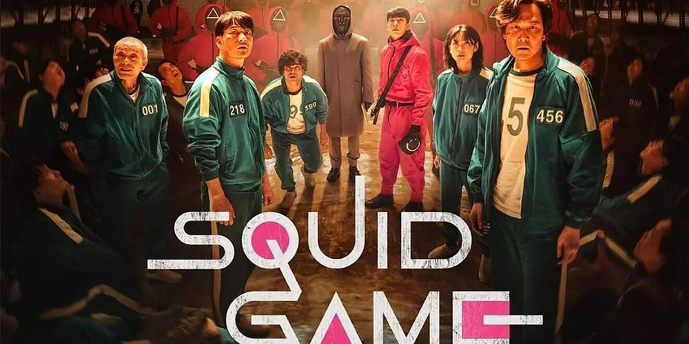

Breaking Bad

Vikings

Stranger things
Squid game
| Serie | résumé | Nombre de saison | Année de sortie | Bande d'annonce |
|---|---|---|---|---|
| Breaking Bad |
La série se concentre sur Walter White, un professeur de chimie surqualifié et père de famille, qui, ayant appris qu'il est atteint d'un cancer du poumon en phase terminale, sombre dans le crime pour assurer l'avenir financier de sa famille | 5 | 2008 | |
| Vikings |
Scandinavie, à la fin du 8ème siècle. Ragnar Lodbrok, un jeune guerrier viking, est avide d'aventures et de nouvelles conquêtes. Lassé des pillages sur les terres de l'Est, il se met en tête d'explorer l'Ouest par la mer. | 6 | 2020 | |
| Stranger things |
L'intrigue s'étale sur plusieurs années, entre 1983 et 1986. Un soir de novembre 1983 dans la ville américaine d'Hawkins en Indiana, le jeune Will Byers âgé de douze ans disparaît brusquement sans laisser de traces, hormis son vélo. Plusieurs personnages vont alors tenter de le retrouver : sa mère Joyce, ses amis : Lucas Sinclair, Dustin Henderson et Mike Wheeler, guidés par la mystérieuse Eleven, une jeune fille ayant des pouvoirs psychiques, ainsi que le chef de la police Jim | 4 | 2016 | |
|  Squid game |
456 personnes, qui ont toutes des difficultés financières dans la vie, sont invitées à prendre part à une mystérieuse compétition de survie. Participant à une série de jeux traditionnels pour enfants, mais avec des issues mortelles, elles risquent leur vie pour gagner le prix de 45,6 milliards de wons (soit environ 38 millions de dollars américains ou 32 millions d'euros) | 1 | 2021 |